pacman -S subversion
yum install subversion
apt-get install subversion
我们做一个'Hello World'的小例子
(1) 登录ECAE
(2) 访问导航栏中的 "我的应用" 如图1
图1: 导航栏
(3) 单击右侧按钮 "创建新的应用" 如图2
图2: 创建新的应用按钮
(4) 填写之后点击 "创建" 如图3
图3: 创建新的应用窗口
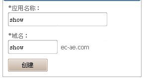
(5) 应用创建之后左边会显示 如图4
图4: 应用信息
(6) 点击 "查看详情", 里面是新建应用的基本信息 如图5
图5: 基本信息
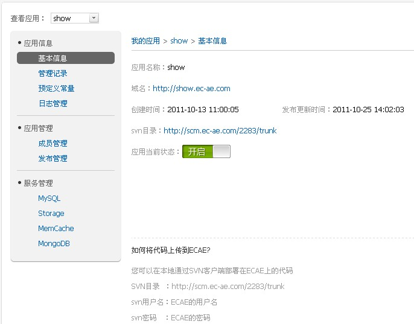
第一步 同步数据
右键菜单选择 SVN Checkout 如图6
图6: svn checkout
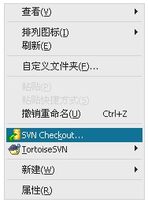
图7: checkout信息
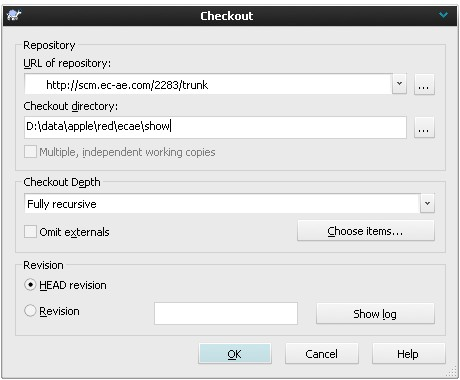
登录提示输入SVN账户和密码 如图8
图8: SVN账户和密码
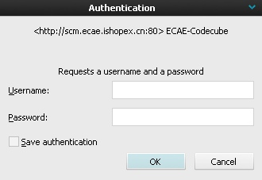
图9: 同步完成
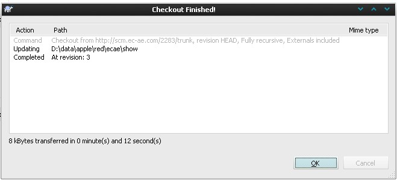
第二步 新建文件
进入同步下来的文件夹 如图10
图10: show文件夹外
建立一个index.php文件，里面输入php语言'Hello World' 如图11
图11: show文件夹内
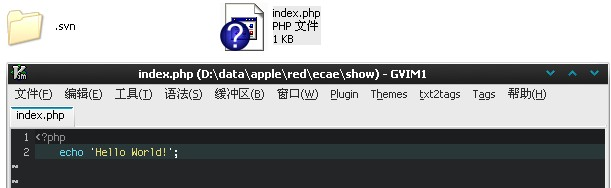
第三步 上传数据
把新建的index.php添加到版本里 如图12
图12: svn add
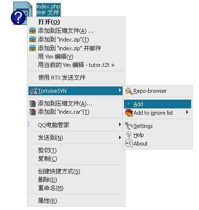
然后svn提交 如图13
图13: svn commit
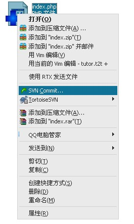
这里需要注意svn提交信息有字数限制 如图14
图14: svn -m
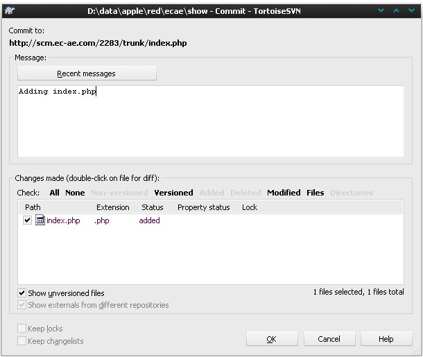
图15: 上传成功
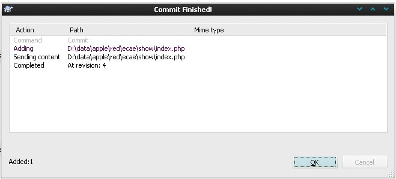
图16: 上传后目录
访问站点
在基本信息里面找到域名点击访问 效果如图17
图17: show站点
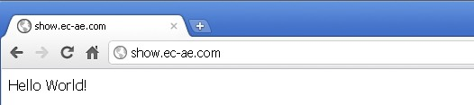
第一步 同步数据
svn co http://scm.ec-ae.com/2283/trunk show
第二步 新建文件
cat > index.php << "EOF"
<?php
echo 'Hello ECAE!';
EOF
第三步 上传文件
svn add index.php svn ci -m 'adding index.php' index.php
访问站点
在基本信息里面找到域名点击访问 效果如图17
图17: show站点